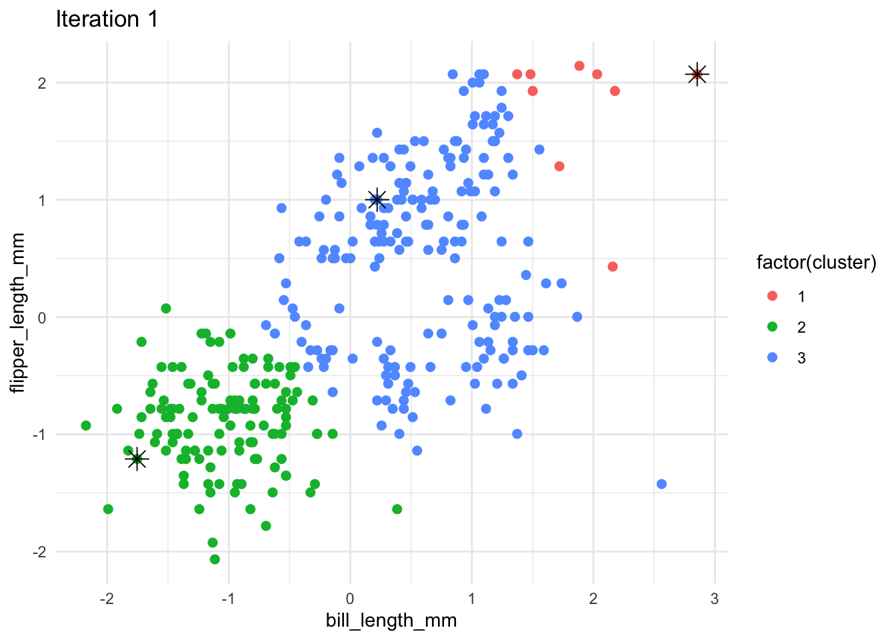
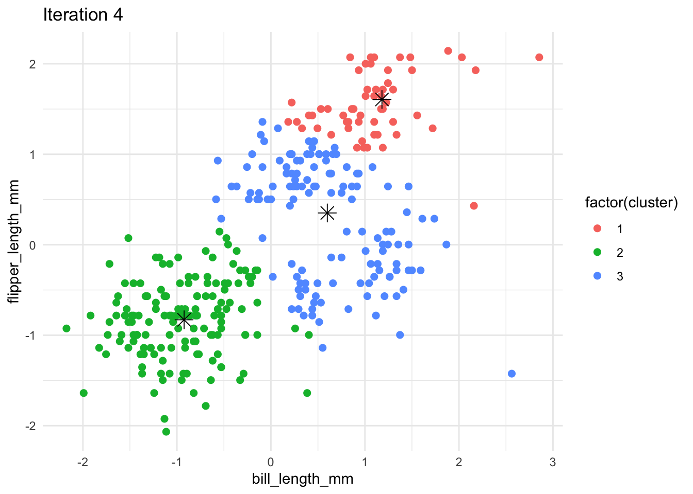
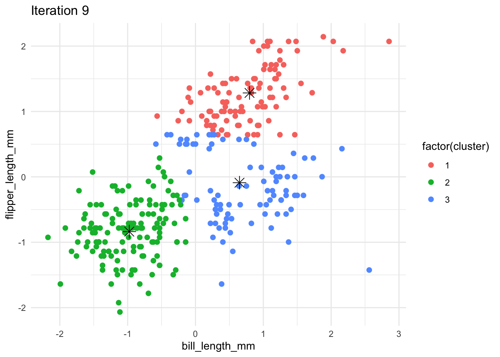
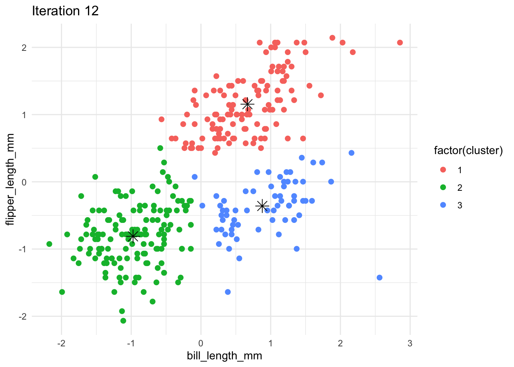
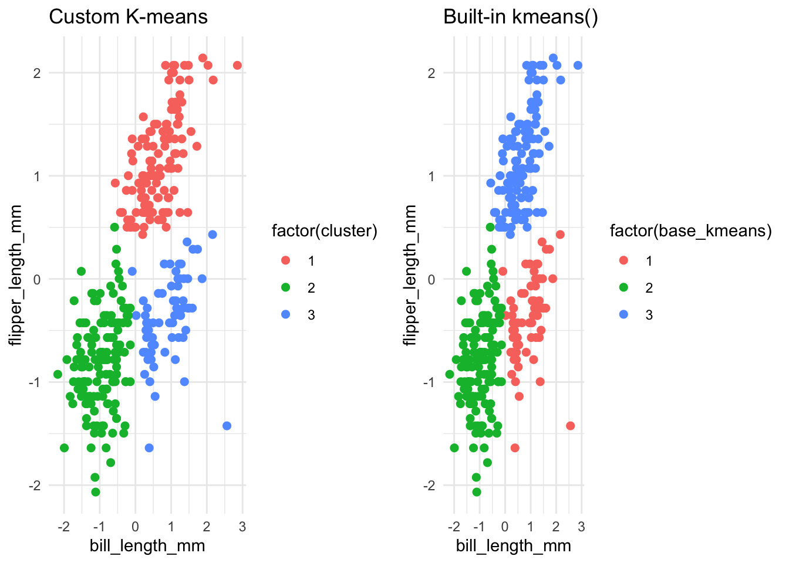
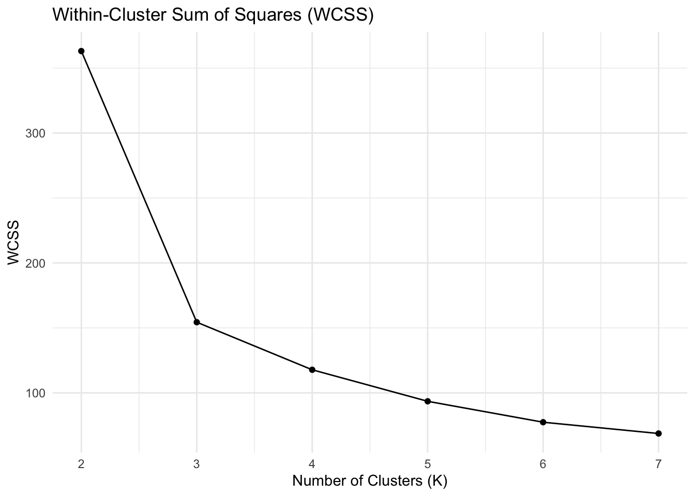
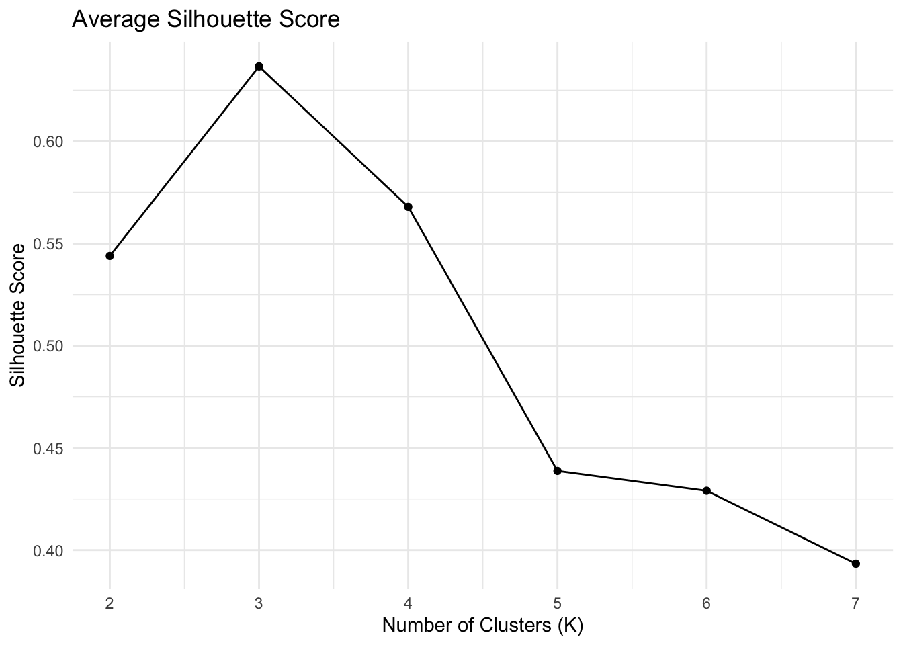
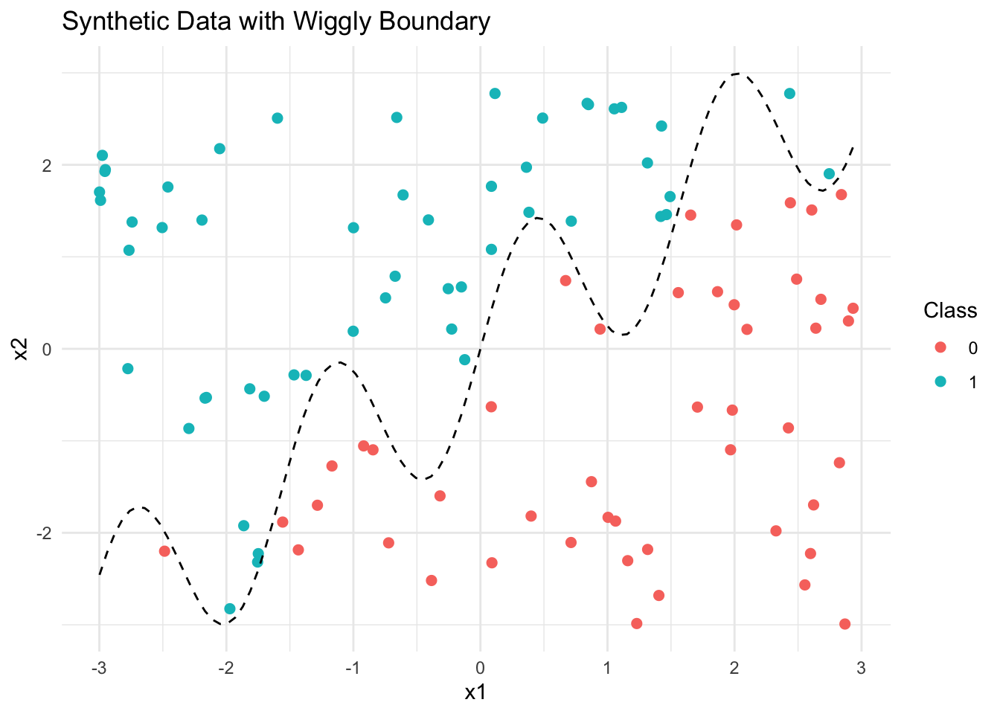

let’s turn our attention to an unsupervised learning technique: K-means clustering. In this exercise, we’ll implement the K-means algorithm from scratch to deepen our understanding of how it iteratively partitions data into clusters. We’ll also visualize each step of the algorithm to gain an intuitive grasp of how the centroids move and how data points are reassigned during convergence. As a test case, we’ll apply our custom implementation to the Palmer Penguins dataset, focusing specifically on the bill length and flipper length variables. Finally, we’ll compare our custom results to those produced by R’s built-in kmeans() function to evaluate performance and clustering behavior.
Here are the packages we need this time:
library(ggplot2)library(dplyr)
Attaching package: 'dplyr'
The following objects are masked from 'package:stats':
filter, lag
The following objects are masked from 'package:base':
intersect, setdiff, setequal, union
library(tidyr)library(gridExtra)
Attaching package: 'gridExtra'
The following object is masked from 'package:dplyr':
combine
library(class)
First, read and clean the palmer penguins dataset:
# Select relevant columns and remove NAsdf_clean <- df %>%select(bill_length_mm, flipper_length_mm) %>%drop_na()# Standardize the datadf_scaled <-as.data.frame(scale(df_clean))
To deepen our understanding of how the K-means clustering algorithm operates under the hood, we’ll now implement the algorithm from scratch in R. This custom implementation will allow us to observe how the centroids evolve and how the points are re-clustered across iterations. We’ll include functionality to track and visualize the state of the algorithm at each step. The following function, my_kmeans(), takes in a dataset and performs K-means clustering using only the first two columns (e.g., bill length and flipper length), storing the clustering history for visualization purposes:
After running our custom K-means algorithm, we can now visualize how the clustering process unfolds over each iteration. By plotting the cluster assignments and centroids step-by-step, we gain valuable insights into how the algorithm converges. The following code generates a series of plots—one for each iteration—highlighting how points are reassigned and centroids are updated until the algorithm stabilizes:
plots <-lapply(seq_along(res$history), function(i) { pdat <- res$history[[i]]$points cent <- res$history[[i]]$centroidsggplot(pdat, aes(x = bill_length_mm, y = flipper_length_mm, color =factor(cluster))) +geom_point(size =2) +geom_point(data = cent, aes(x = bill_length_mm, y = flipper_length_mm), color ="black", shape =8, size =4) +ggtitle(paste("Iteration", i)) +theme_minimal()})
plots
[[1]]

[[2]]
[[3]]
[[4]]

[[5]]
[[6]]
[[7]]
[[8]]
[[9]]

[[10]]
[[11]]
[[12]]

[[13]]
The sequence of K-means clustering plots illustrates how the algorithm iteratively refines cluster assignments and centroid positions. In the early iterations, we observe noticeable shifts in both point classifications and centroid locations, indicating the model is still exploring the optimal partitioning of the data. As iterations progress, these changes diminish, and by around iteration 13, the cluster assignments become stable, and the centroids converge to consistent positions near the centers of the respective clusters. The final clustering result shows three well-separated groups, with centroids positioned in dense regions of their clusters. This suggests that the algorithm has successfully identified meaningful structure in the data, with good cohesion within clusters and clear separation between them.
set.seed(123)kmeans_base <-kmeans(df_scaled, centers =3, nstart =10)df_scaled$base_kmeans <- kmeans_base$clusterp1 <-ggplot(res$result, aes(x = bill_length_mm, y = flipper_length_mm, color =factor(cluster))) +geom_point(size =2) +ggtitle("Custom K-means") +theme_minimal()p2 <-ggplot(df_scaled, aes(x = bill_length_mm, y = flipper_length_mm, color =factor(base_kmeans))) +geom_point(size =2) +ggtitle("Built-in kmeans()") +theme_minimal()grid.arrange(p1, p2, ncol =2)

The side-by-side comparison of the clustering results from the custom K-means implementation and R’s built-in kmeans() function reveals both alignment and subtle differences. Both approaches successfully partition the data into three distinct clusters based on bill length and flipper length, indicating that the underlying structure of the data has been effectively captured.
To quantitatively assess the quality of clustering and determine the most appropriate number of clusters, we now turn to two widely used evaluation metrics: within-cluster sum of squares (WCSS) and the silhouette score. These metrics provide complementary insights—WCSS captures how compact the clusters are, while the silhouette score evaluates how well each point fits within its assigned cluster compared to others. In the next step, we’ll compute and plot these metrics for a range of cluster counts (K = 2 to 7) to help identify the optimal number of clusters suggested by the data.
library(cluster)
# Evaluate clustering metrics for K = 2 to 7k_values <-2:7wcss <-numeric(length(k_values))silhouette_scores <-numeric(length(k_values))for (i inseq_along(k_values)) { k <- k_values[i] kmeans_res <-kmeans(df_scaled, centers = k, nstart =10) wcss[i] <- kmeans_res$tot.withinss sil <-silhouette(kmeans_res$cluster, dist(df_scaled)) silhouette_scores[i] <-mean(sil[, 3])}
p_wcss <-ggplot(metrics_df, aes(x = K, y = WCSS)) +geom_line() +geom_point() +ggtitle("Within-Cluster Sum of Squares (WCSS)") +xlab("Number of Clusters (K)") +ylab("WCSS") +theme_minimal()p_sil <-ggplot(metrics_df, aes(x = K, y = Silhouette)) +geom_line() +geom_point() +ggtitle("Average Silhouette Score") +xlab("Number of Clusters (K)") +ylab("Silhouette Score") +theme_minimal()
p_wcss

p_sil

best_k_wcss <-which.min(diff(diff(wcss))) +2best_k_sil <- k_values[which.max(silhouette_scores)]cat("Suggested number of clusters based on WCSS elbow method:", best_k_wcss, "\n")
Suggested number of clusters based on WCSS elbow method: 6
cat("Suggested number of clusters based on silhouette score:", best_k_sil, "\n")
Suggested number of clusters based on silhouette score: 3
The comparison of clustering quality using both the within-cluster sum of squares (WCSS) and the silhouette score provides valuable guidance in selecting an appropriate number of clusters. According to the elbow method applied to WCSS, the optimal number of clusters appears to be 6, where the rate of decrease in WCSS begins to level off. In contrast, the silhouette score, which evaluates both cohesion and separation, peaks at K = 3, suggesting that three clusters provide the best-defined groupings in terms of structure and separation.
If you want a challenge, add your plots as an animated gif on your website so that the result looks something like this.
1b. Latent-Class MNL
todo: Use the Yogurt dataset to estimate a latent-class MNL model. This model was formally introduced in the paper by Kamakura & Russell (1989); you may want to read or reference page 2 of the pdf, which is described in the class slides, session 4, slides 56-57.
The data provides anonymized consumer identifiers (id), a vector indicating the chosen product (y1:y4), a vector indicating if any products were “featured” in the store as a form of advertising (f1:f4), and the products’ prices in price-per-ounce (p1:p4). For example, consumer 1 purchased yogurt 4 at a price of 0.079/oz and none of the yogurts were featured/advertised at the time of consumer 1’s purchase. Consumers 2 through 7 each bought yogurt 2, etc. You may want to reshape the data from its current “wide” format into a “long” format.
todo: Fit the standard MNL model on these data. Then fit the latent-class MNL on these data separately for 2, 3, 4, and 5 latent classes.
todo: How many classes are suggested by the \(BIC = -2*\ell_n + k*log(n)\)? (where \(\ell_n\) is the log-likelihood, \(n\) is the sample size, and \(k\) is the number of parameters.) The Bayesian-Schwarz Information Criterion link is a metric that assess the benefit of a better log likelihood at the expense of additional parameters to estimate – akin to the adjusted R-squared for the linear regression model. Note, that a lower BIC indicates a better model fit, accounting for the number of parameters in the model.
todo: compare the parameter estimates between (1) the aggregate MNL, and (2) the latent-class MNL with the number of classes suggested by the BIC.
2a. K Nearest Neighbors
In this step, we generate a synthetic dataset specifically designed to test the performance of K-Nearest Neighbors (KNN) classifiers. The dataset consists of two features, x1 and x2, both uniformly sampled from a range of -3 to 3. This synthetic setting allows us to later evaluate how well KNN adapts to nonlinear decision boundaries, making it an excellent test case for comparing custom and built-in implementations of KNN.
# gen data -----set.seed(42)n <-100x1 <-runif(n, -3, 3)x2 <-runif(n, -3, 3)x <-cbind(x1, x2)# define a wiggly boundaryboundary <-sin(4*x1) + x1y <-ifelse(x2 > boundary, 1, 0) |>as.factor()dat <-data.frame(x1 = x1, x2 = x2, y = y)
Once the synthetic dataset has been generated, the next step is to visualize the data to understand how the binary outcome variable y relates to the two features x1 and x2. In this plot, the horizontal axis represents x1, and the vertical axis represents x2. Each point is colored according to the value of y, indicating its class label.
This visualization provides a clear view of the classification structure, showing how the outcome is determined by a nonlinear, wiggly boundary defined by the function sin(4 * x1) + x1. Optionally, this decision boundary can be drawn on the plot as a curve to illustrate how the classes are separated. This step is crucial for developing an intuition about the complexity of the classification task and how well KNN might perform in this scenario.
ggplot(dat, aes(x = x1, y = x2, color = y)) +geom_point(size =2) +stat_function(fun =function(x) sin(4*x) + x, color ="black", linetype ="dashed") +labs(title ="Synthetic Data with Wiggly Boundary",x ="x1",y ="x2",color ="Class") +theme_minimal()

The plot shows a synthetic dataset where each point is classified based on whether it lies above or below a wiggly decision boundary. Points are colored by class: class 1 (cyan) lies above the boundary, and class 0 (red) lies below.
This setup creates a non-linear separation between classes, making it ideal for evaluating flexible models like K-Nearest Neighbors (KNN). The clear division, with some overlap near the boundary, highlights the challenge for classifiers and the importance of tuning K to capture local patterns without overfitting.
And then we create the test dataset, using the same way above:
With the synthetic dataset visualized and understood, the next step is to implement the K-Nearest Neighbors (KNN) algorithm from scratch. This involves classifying test points by finding the k closest training points using Euclidean distance and assigning the most common label among them. By writing this manually, we gain a clearer understanding of how KNN operates at the algorithmic level. To validate our custom implementation, we also compare the results with R’s built-in class::knn() function, which provides a benchmark for correctness and performance.
# Compare with built-in KNNpred_builtin <-knn(train = train_X, test = test_X, cl = train_y, k =5)cat("Accuracy (class::knn):", mean(pred_builtin == test_y), "\n")
Accuracy (class::knn): 0.9
After running both the manual and built-in KNN implementations, we observe that both achieved an accuracy of 0.9 on the test dataset. This strong agreement confirms that the manual algorithm is correctly implemented. The high accuracy also suggests that the chosen value of k (in this case, k = 5) is effective at capturing the local decision structure in the data without overfitting. This step demonstrates that KNN is a robust choice for handling nonlinear boundaries when tuned properly and highlights the value of verifying custom code against reliable library functions.
To evaluate the performance of our K-Nearest Neighbors (KNN) classifier more thoroughly, we now explore how classification accuracy changes with different values of k, the number of neighbors considered. Specifically, we run our KNN function for each value of k from 1 to 30, recording the proportion of correctly classified points on the test dataset for each case.
This process allows us to generate a plot showing how accuracy varies as k increases. By visualizing this relationship, we can identify the optimal value of k.
# Evaluate accuracy for k = 1 to 30k_values <-1:30accuracy_scores <-numeric(length(k_values))for (k in k_values) { preds <-knn_predict(train_X, train_y, test_X, k) accuracy_scores[k] <-mean(preds == test_y)}# Plot accuracy vs. kaccuracy_df <-data.frame(k = k_values, accuracy = accuracy_scores)ggplot(accuracy_df, aes(x = k, y = accuracy)) +geom_line(color ="steelblue") +geom_point(color ="steelblue") +labs(title ="KNN Accuracy vs. K",x ="Number of Neighbors (K)",y ="Accuracy") +theme_minimal()
After running the K-Nearest Neighbors (KNN) classifier for values of k from 1 to 30, we find that the optimal value is k = 15, which achieved the highest accuracy of 0.98 on the test dataset. This indicates that using 15 neighbors for classification strikes a strong balance between bias and variance: it smooths out local noise while still capturing the non-linear structure of the data. The high accuracy at k=15 suggests that the classifier can generalize well to new, unseen data under this setting — confirming that KNN, when carefully tuned, can perform very effectively on problems with non-linear decision boundaries.
2b. Key Drivers Analysis
todo: replicate the table on slide 75 of the session 5 slides. Specifically, using the dataset provided in the file data_for_drivers_analysis.csv, calculate: pearson correlations, standardized regression coefficients, “usefulness”, Shapley values for a linear regression, Johnson’s relative weights, and the mean decrease in the gini coefficient from a random forest. You may use packages built into R or Python; you do not need to perform these calculations “by hand.”
If you want a challenge, add additional measures to the table such as the importance scores from XGBoost, from a Neural Network, or from any additional method that measures the importance of variables.